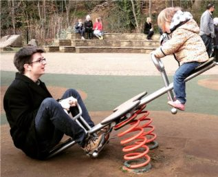

<div class="home">



  <h3 class="page-heading">Teaching</h3>
      <ul>
        <li> Fall 2015: <a href="http://ptwiddle.github.io/MAS439-Commutative-Algebra/">MAS 439, Commutative Algebra and Algebraic Geometry</a></li>
        <li> Spring 2016: <a href="http://ptwiddle.github.io/MAS341-Graph-Theory/">MAS 341, Graph Theory</a> </li>
      </ul>
  <h3 class="page-heading"> Research </h3>
       I study algebraic geometry and combinatorics, especially when they interact.  More specific research interests include Gromov-Witten theory, orbifolds, Hilbert schemes, and partitions.

</div>
